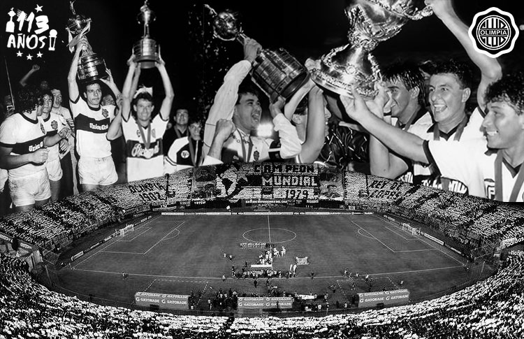
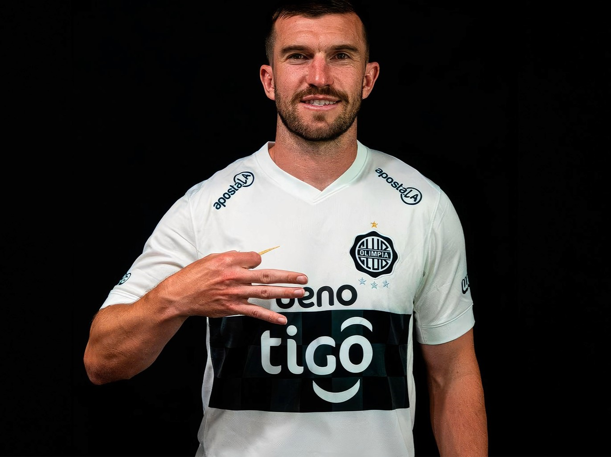

HACIENDO HISTORIA DESDE 1902
Bienvenidos al sitio web oficial del Club Olimpia. El Club Olimpia fue fundado el 25 de julio de 1902 por un grupo de jóvenes, encabezado por William Paats, un holandés que llegó a Paraguay como educador y es considerado el padre del fútbol paraguayo. Hubo tres propuestas de nombres, "Paraguay", fue el primero luego surgió "Esparta", pero finalmente triunfó la propuesta del gran promotor de la reunión, William Paats la de denominarlo "Football Club Olimpia".
La primera Comisión Directiva estuvo compuesta por: Ramón Bareiro, como Presidente; Junio Quinto Godoy, Vicepresidente; Genaro Gutiérrez Yegros, Secretario; Antonio Pedraza, Prosecretario; y Fernando S. Pascual, Tesorero. Fueron vocales: Héctor Cabañas Velázquez, Juan Rodi, Luis Marecos y Juan D. Mora. Mientras tanto, Lucio Sila Godoy fue elegido Capitán General.

MOMENTOS DESTACADOS
NOTICIAS
TIM PAYNE NUEVO JUGADOR DEL OLIMPIA
El exitante Tim Payne se uné al club Olimpia como reemplazante de Raul Cacéres, aquí una imagen:

MORTERO BALA SE UNE AL OLIMPIA
El exquisito goleador, mas grande de todos, MORTERO BALA se uné al club Olimpia como delantero para acompañar a Tim Payne en su debut. Tienen esperanzas de conseguir la 4ta gracias a el.